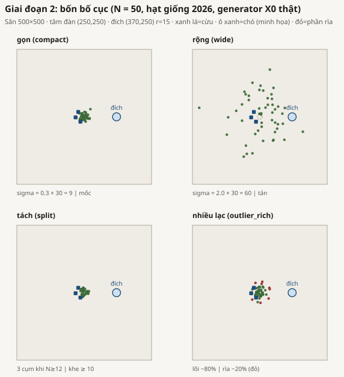
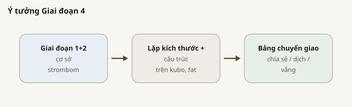
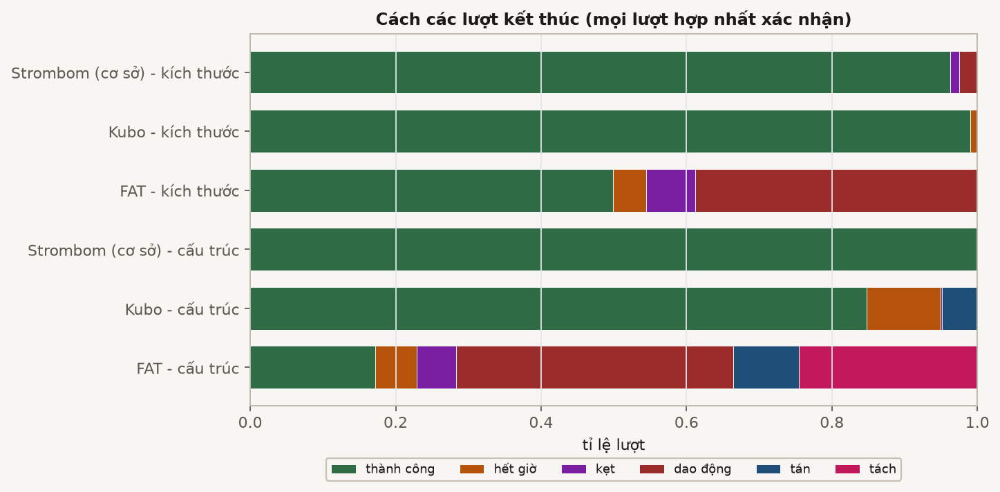

TÓM TẮT Nhìn nhanh
CÂU HỎI Giai đoạn 4 hỏi gì?
RQ4 / Gói D: biên kích thước và cấu trúc có chuyển giữa ba phương pháp bắt buộc không?
- C4: D_min / quá tải chia sẻ giữa các phương pháp (kể cả cấu trúc), hoặc ghi rõ chỗ dịch / vắng.
Cơ sở kích thước và cấu trúc đã đo ở Giai đoạn 1 và 2. Giai đoạn này không chạy lại strombom_multi.
THIẾT KẾ Những gì bị khóa
| Lựa chọn | Giá trị |
|---|---|
| Phương pháp | kubo, fat (so với strombom_multi Giai đoạn 1/2) |
| N / D kích thước | cùng lưới Giai đoạn 1; chỉ xuất phát compact |
| N / bố cục cấu trúc | {50,100,200} x bốn họ X0 (xem Bố cục) |
| theta / T0 | 0.90 / 10,000 |
| Mẫu | dò 30; xác nhận 100; Kubo outlier_rich N=200 dùng 200 mẫu trên D trong {1,2,3,4,6,10,15,20,25} |
| obs_mode | global |
THIẾT KẾ Bố cục

Chuyển giao kích thước chỉ dùng compact. Chuyển giao cấu trúc dùng lại cùng bốn họ X0 như Giai đoạn 2, trên cùng quy tắc sân, để đối chiếu phương pháp không lẫn với bộ bố cục mới. Nhãn chia sẻ / dịch / vắng nằm ở mục Kết quả.

| Bố cục | Định nghĩa generator | Vai trò trong thiết kế |
|---|---|---|
| compact | Gauss, sigma = 0.3 x 30 = 9 | Đàn gọn tham chiếu (hình học cơ sở Giai đoạn 1) |
| wide | Gauss, sigma = 2.0 x 30 = 60 | Đàn loãng cần gom trước |
| split | 2 cụm nếu N < 12, không thì 3; tách ít nhất 10 | Xuất phát cụm (bố cục kiểm tra) |
| outlier_rich | Lõi ~80% (sigma = 12); ~20% cá thể lạc ngoài r_a * N^(2/3) | Lõi cộng cá thể lạc |
Quy tắc đọc chuyển giao

CHẠY Cách đã chạy
| Bước | Số lượt |
|---|---|
| kubo kích thước dò / xác nhận | 3,000 / 2,100 |
| kubo cấu trúc dò / xác nhận | 3,600 / 4,000 |
| fat kích thước dò / xác nhận | 3,000 / 2,000 |
| fat cấu trúc dò / xác nhận | 3,600 / 2,400 |
Xác nhận cấu trúc Kubo có 4,000 dòng: outlier_rich N=200 dùng 200 mẫu trên D trong {1,2,3,4,6,10,15,20,25} (../kubo_structure/claim/).
KẾT QUẢ Kết quả

D_min kích thước (compact, theta=0.90)
| N | strombom | kubo | fat |
|---|---|---|---|
| 5 | 2 | 3 | 1 |
| 10 | 2 | 1 | 1 |
| 25 đến 400 | 1 | 1 | không <= 35 |
Không quá tải trên bản đồ kích thước tập trung. R tốt nhất theo N của FAT với N=50 đến 400 là 0.40 đến 0.53. Gói D kích thước: 8 chia sẻ, 7 dịch, 29 vắng.
D_min cấu trúc
| Bố cục | N | strombom | kubo | fat |
|---|---|---|---|---|
| compact / split | 50,100,200 | 1 | 1 | không |
| outlier_rich | 50,100 | 1 | 1 | không |
| outlier_rich | 200 | 1 | 20 | không |
| wide | 50,100,200 | 1 | không (R tốt nhất 0.47 đến 0.54) | không (R=0) |


KẾT QUẢ Kubo outlier_rich N=200 (nêu một lần)
D = 1,2,3,4,6,10,15 giữ dưới 0.90 ở 200 mẫu (R = 0.745, 0.855, 0.835, 0.860, 0.890, 0.875, 0.855). D_min = 20 ở 200 mẫu (R = 0.935); D = 25 cũng 200 mẫu (R = 0.910). D = 35 vẫn 30 mẫu (R = 0.967). Khoảng bootstrap trên D_min là [2, 20]. Không quá tải.

KHẲNG ĐỊNH Kết luận C4
Đánh giá: ĐƯỢC ỦNG HỘ (một phần).
C4 hỏi D_min / quá tải có chuyển giữa ba phương pháp hay không, kể cả cấu trúc. Kết quả đo được là lẫn: chuyển giao đúng trên một lát cắt và thất bại trên các lát khác. Vì thế nhãn là một phần, không phải ủng hộ đầy đủ và cũng không phải bác bỏ toàn bộ.
Vì sao chỉ một phần (không phải ủng hộ đầy đủ)
- Lát cắt chia sẻ: trên kích thước tập trung, Kubo và strombom_multi đều có D_min = 1 với mọi N >= 25.
- Vắng với FAT: FAT không bao giờ đạt R >= 0.90 với mọi D <= 35 khi N >= 25 (kích thước và mọi bố cục cấu trúc).
- Vắng với Kubo wide: R tốt nhất khoảng 0.47 đến 0.54; không có D_min trong lưới đã khóa.
- Dịch với Kubo outlier_rich N=200: D = 1..15 dưới theta ở 200 mẫu; D_min = 20 ở 200 mẫu (bootstrap [2, 20]).
- Hàng N rất nhỏ bị dịch ngay cả nơi chuyển giao gần đúng (N = 5, 10).
Chỉ đọc bản đồ kích thước sẽ phóng đại C4. Bản đồ cấu trúc mới là đối chiếu ràng buộc: lựa chọn bộ điều khiển có thể xóa đáp án D_min = 1 của cơ sở dù kích thước tập trung nhìn như chia sẻ.
Nhãn chuyển giao đã đo
| Thuộc tính | kubo so với strombom | fat so với strombom |
|---|---|---|
| D_min kích thước N>=25 | chia sẻ | vắng |
| D_min kích thước N=5,10 | dịch | dịch |
| Quá tải kích thước | vắng (không bên nào quá tải) | vắng |
| Cấu trúc compact / split | chia sẻ (D_min = 1) | vắng |
| Cấu trúc wide | vắng | vắng |
| Cấu trúc outlier_rich N=200 | dịch (D_min = 20) | vắng |
Bằng chứng đã xác thực (hợp nhất xác nhận và bảng Gói D)
Tài liệu và tracker không phải bằng chứng. Đánh giá dựa trên các tệp đo được sau:
- ../package_d/size/transfer_summary.csv, ../package_d/size/transfer_table.csv
- ../package_d/structure/frontier_by_method_layout.csv và transfer_*.csv
- ../kubo_size/claim/packages/a/, ../fat_size/claim/packages/a/ (biên / độ tin cậy)
- ../kubo_structure/claim/merged_trials.csv, merged_dmin_bootstrap.csv, outlier_rich_n200_window.json
- Đối chiếu cơ sở đã khóa ở hợp nhất xác nhận Giai đoạn 1 / 2 (strombom_multi)
Cần gì để kết luận hoàn toàn
Có hai kiểu “hoàn toàn” khác nhau; chúng không cùng một khẳng định:
- Hoàn toàn như bản đồ chuyển giao (cách diễn C4 hiện tại): đã đủ mức xác nhận cho các nhãn chia sẻ / dịch / vắng ở trên. Không cần chạy thêm để giữ đánh giá một phần.
- Hoàn toàn như chuyển giao đầy đủ giữa mọi phương pháp (mọi phương pháp chia sẻ D_min / quá tải trên kích thước và cấu trúc): dữ liệu hiện tại không ủng hộ. Để đạt kết luận mạnh hơn đó cần bằng chứng xác nhận mới: (a) FAT đạt R >= 0.90 với N >= 25 trên compact và các bố cục cấu trúc, và (b) Kubo đạt R >= 0.90 trên wide. Với obs_mode=global và lưới đã khóa, FAT và Kubo-wide hiện không đạt ngưỡng đó. Đổi thiết kế (ví dụ cảm biến cục bộ / thang Giai đoạn 5) là thí nghiệm mới, không phải gắn lại nhãn thí nghiệm này.
GIỚI HẠN Giới hạn
- Bootstrap D_min Kubo outlier_rich N=200 vẫn rộng ([2, 20]) vì vài D < 20 nằm gần theta.
- D = 35 trên Kubo outlier_rich N=200 vẫn ở 30 mẫu.
- Không có ô quá tải; Giai đoạn 3 / C2b vẫn bỏ qua.
- obs_mode cố định global; thang Giai đoạn 5 chưa chạy.
TIẾP Tiếp
- Không coi chuyển giao đầy đủ giữa mọi phương pháp là đã xong nếu chưa có bằng chứng mới cho FAT / Kubo-wide (xem mục khẳng định).
- Tổng hợp liên giai đoạn: ../../summary/SUMMARY_REPORT_vi.html.
PHỤ LỤC Dữ liệu thô
| Đường dẫn | Nội dung |
|---|---|
| ../kubo_size/claim/ | Xác nhận kích thước Kubo + Gói A |
| ../fat_size/claim/ | Xác nhận kích thước FAT + Gói A |
| ../kubo_structure/claim/ | Xác nhận cấu trúc Kubo (kèm cửa sổ outlier_rich N=200) |
| ../fat_structure/claim/ | Xác nhận cấu trúc FAT |
| ../package_d/size/ | Bảng chuyển giao kích thước Gói D (CSV) |
| ../package_d/structure/ | Biên / CSV chuyển giao cấu trúc Gói D |